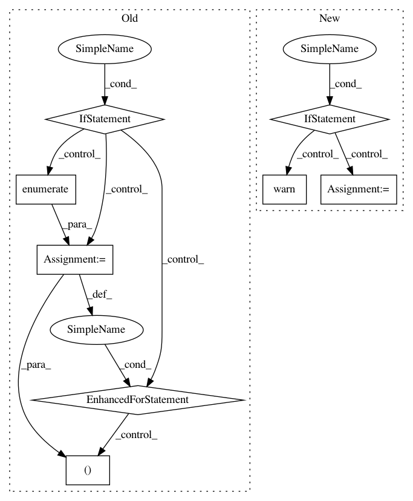

d61625b3950ffa9ee3d59e91295b49357be03b27,skimage/segmentation/random_walker_segmentation.py,,random_walker,#Any#Any#Any#Any#Any#Any#Any#Any#Any#,215
Before Change
"labels == 0. No zero valued areas in labels were "
"found. Returning provided labels.")
if return_full_prob:
// Find and iterate over valid labels
unique_labels = np.unique(labels)
unique_labels = unique_labels[unique_labels > 0]
out_labels = np.empty(labels.shape + (len(unique_labels),),
dtype=np.bool)
for n, i in enumerate(unique_labels):
out_labels[..., n] = (labels == i)
else:
out_labels = labels
return out_labels
// This algorithm expects 4-D arrays of floats, where the first three
// dimensions are spatial and the final denotes channels. 2-D images have
After Change
labels = np.atleast_3d(labels)
// No unlabeled pixel, so nothing to do
if (labels == 0).sum() == 0:
labels = np.squeeze(labels)
labels[inds_isolated_seeds] = isolated_values
warn("Random walker only segments unlabeled areas, where "
"labels == 0. No zero valued areas in labels were "
"found. Returning provided labels.")
return _unchanged_labels(labels, return_full_prob)
if np.any(labels < 0):
lap_sparse = _build_laplacian(data, spacing, mask=labels >= 0,
beta=beta, multichannel=multichannel)
else:
In pattern: SUPERPATTERN
Frequency: 3
Non-data size: 8
Instances
Project Name: scikit-image/scikit-image
Commit Name: d61625b3950ffa9ee3d59e91295b49357be03b27
Time: 2018-12-16
Author: emmanuelle.gouillart@nsup.org
File Name: skimage/segmentation/random_walker_segmentation.py
Class Name:
Method Name: random_walker
Project Name: ContextLab/hypertools
Commit Name: dce3b66b54fac2040e826a5a465ff58cf1295e7f
Time: 2017-06-14
Author: andrew.heusser@gmail.com
File Name: hypertools/tools/reduce.py
Class Name:
Method Name: reduce
Project Name: ContextLab/hypertools
Commit Name: 449ccc820a0558d742bc7055bc37c1690dff4496
Time: 2017-06-14
Author: andrew.heusser@gmail.com
File Name: hypertools/tools/reduce.py
Class Name:
Method Name: reduce